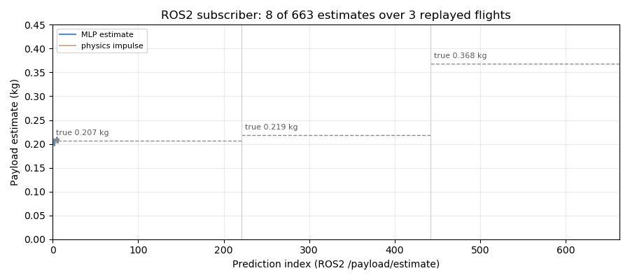
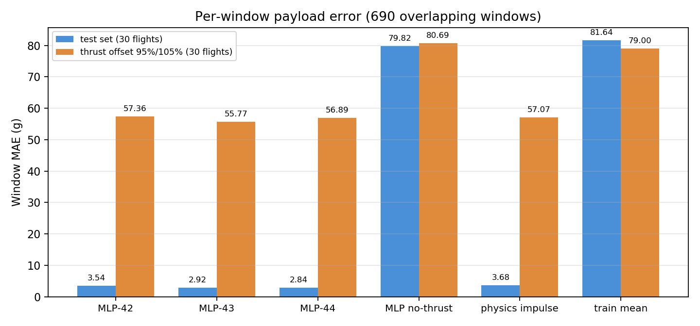
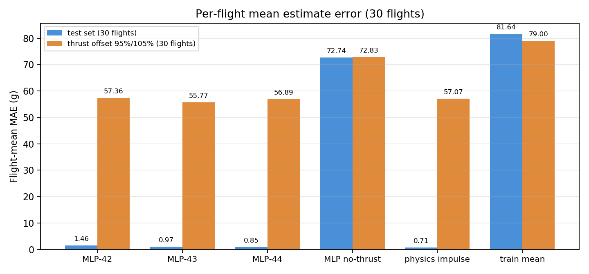
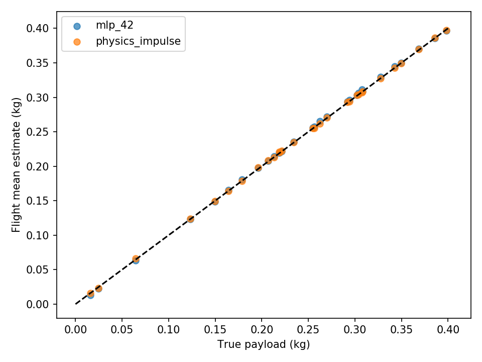
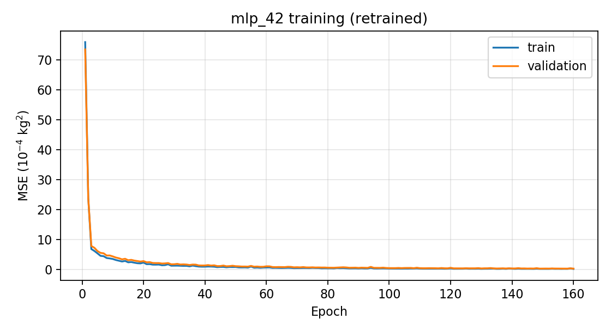
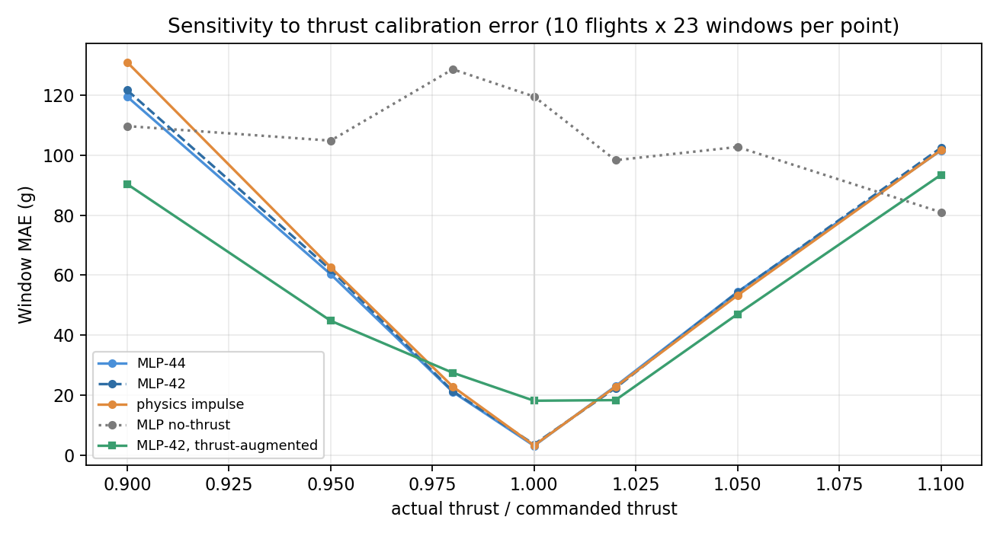

无人机载荷质量估计
本页记录一个可复现的载荷质量估计实验：用飞行中的推力指令与竖直速度响应，估计无人机当前搭载物的质量（kg）。同一个推力下，载荷越重、竖直加速越慢——模型要学的就是这个关系。
实验在 MuJoCo 里做：把同一架四旋翼的机身质量改成"空机 + 载荷"，用固定参数的控制器飞出一段高度轨迹，记录推力与速度，再用神经网络和物理公式分别反推载荷。

上图的每一帧都来自真实运行：payload_estimator 节点订阅回放话题，逐条发布 /payload/estimate，共 663 条估算。三次飞行的真实载荷分别是 0.207、0.219、0.368 kg。
1. 任务定义与设计取舍
输入：最近 20 个采样点（20 Hz，约 0.95 秒）的推力指令与竖直速度。
输出：载荷质量估计值（kg），范围 0～0.4 kg。
边界：只做水平姿态下的竖直飞行，且空机质量与推力标定已知。这里的"载荷"是附加质量，与着陆时的接地力不是一回事。
三个关键取舍：
| 取舍 | 选择 | 理由 |
|---|---|---|
| 特征 | 推力序列 + 速度差分加速度序列 | 动力学上，推力与加速度之比直接给出质量；网络不必自己学微分 |
| 网络 | 小 MLP（38→48→24→1） | 输入已是物理量，样本只有 90 次飞行；深层网络没有增益 |
| 对照 | 同一窗口的冲量物理基线 | 这个问题有闭式解，必须与它比较，否则无法说明神经网络的价值 |
1.1 与社区模型的关系
四旋翼模型复用 OpenHUTB 社区 PR #178，版本与许可见 models/source.json 与 THIRD_PARTY_NOTICES.md。质量变化实验、数据采集、训练与 ROS2 估计程序都是本项目新增的。
1.2 功能与入口
| 阶段 | 入口 | 输出 |
|---|---|---|
| 自检 | bash main.sh doctor |
artifacts/environment.json |
| 数据 | bash main.sh prepare |
解压语料到 data/ |
| 采集 | bash main.sh collect |
180 次 MuJoCo 飞行（另存目录） |
| 训练 | bash main.sh train |
models/<name>/model.pt、meta.json、loss.csv |
| 评估 | bash main.sh evaluate |
results/metrics.json、逐窗口 CSV、2 张图 |
| 测试 | bash main.sh test |
8 项单元测试 |
| 构建 | bash main.sh build |
install/、build/、log/ |
| ROS2 | bash main.sh demo |
两个话题 + 订阅曲线 |
| 仿真图 | python render_validation.py |
results/simulation.png |
2. 运行环境与快速开始
2.1 环境
| 项 | 配置 |
|---|---|
| 系统 | Ubuntu 20.04.6（VMware），6 核 / 8.5 GB |
| ROS | ROS2 Humble（/opt/ros/humble，Python 3.8） |
| 深度学习 | PyTorch 2.4.1+cpu |
| 仿真 | MuJoCo 3.1.6（CPU，无需下载场景） |
| Python | 3.8.10，venv --system-site-packages |
2.2 安装与自检
cd ~/ros2/src/air/payload_mass_estimation
source /opt/ros/humble/setup.bash
/usr/bin/python3 -m venv --system-site-packages ~/uav_prediction_env
source ~/uav_prediction_env/bin/activate
python -m pip install -r requirements.txt # 含 mujoco==3.1.6
bash main.sh doctor
bash main.sh prepare
bash main.sh test
bash main.sh build
doctor 检查 13 个模块，其中 mujoco 只在重新采集时需要：训练与评估只用 numpy + torch。但如果跳过安装，doctor 会直接失败——这是有意的，避免"以为能采集、实际不能"。
ROS_SETUP 与 UAV_ENV 可覆盖 ROS setup 与虚拟环境路径。
2.3 跑回放
两个终端：
# 终端 1：订阅绘图（只写文件，不开窗口）
MPLBACKEND=Agg python -m payload_mass_estimation.dashboard
# 终端 2：回放 3 次测试飞行
bash main.sh demo
回放约 36 秒。订阅端在无新消息 5 秒后落盘（最多等 90 秒），输出 results/ros_subscriber.png、ros_subscriber.json、ros_node.json。约定俗成的现象是：台阶对应三次独立飞行的切换，不代表飞行途中装卸货物。
2.4 重新采集（可选）
采集会覆盖同目录数据，务必先复制项目目录：
cp -r ~/ros2/src/air/payload_mass_estimation ~/paymass_run
cd ~/paymass_run && bash main.sh collect && bash main.sh train && bash main.sh evaluate
3. 数据与仿真
3.1 仿真设置
| 项 | 值 |
|---|---|
| 模型 | 社区四旋翼 models/community_quadrotor.xml |
| 空机总质量 | 0.95 kg = 机身 0.85 + 四个旋翼各 0.025 |
| 载荷范围 | 0～0.4 kg，均匀随机 |
| 控制器 | 固定参数 PID，不读取真实载荷 |
| 高度目标 | m，相位随机 |
| 物理步长 | 2.5 ms |
| 记录频率 | 20 Hz（DT = 0.05 s） |
| 每次时长 | 12 s |
| 观测量 | 高度加标准差 0.025 m/s 的高斯噪声 |
控制器是
它只用到目标高度、当前高度与速度——载荷标签不进入控制律，否则"质量可从控制响应推断"就成了循环论证。
改变质量时沿用原有转动惯量，本实验不讨论载荷偏心与姿态控制。传感器延迟、推力噪声、风扰动都没有包含在正常实验中。
3.2 数据规模与划分
| 集合 | 飞行数 | 种子范围 | 用途 |
|---|---|---|---|
| 训练 | 90 | 40000–40089 | 拟合权重与标准化 |
| 验证 | 30 | 40090–40119 | 选模型（验证 MSE） |
| 测试 | 30 | 40120–40149 | 只报告 |
| 推力偏差 | 30 | 40150–40179 | 鲁棒性测试 |
每次飞行 12 s × 20 Hz = 240 个采样点；滑窗步长 10，每个 20 点窗口 → 每段 23 个窗口，30 段共 690 个重叠窗口。
推力偏差组的实际推力被缩放为指令的 95% 或 105%，但估计器仍只看到原指令，也不重新训练——模拟"推力标定不准"。
原始数据与校验清单在 assets/flights.zip；prepare 解压后，manifest.json 记录每个文件的质量、推力比例与 SHA256，训练与评估前都会校验。
4. 计算原理
4.1 窗口与特征
每个采样点是一行 ：时间、高度、竖直速度、指令推力（N）。取最近 20 行，计算 19 个加速度差分：
特征向量把推力与加速度拼起来：
推力按前一时刻对齐：第 条指令作用在 ，因此驱动 的是 ，不是 。这个错位如果搞反，物理基线与网络都会系统性偏差。
高度、真实质量、飞行编号、未来观测都不进入输入。
4.2 物理基线（冲量法）
对同一窗口用冲量关系：
分母里的 是"比力"：加速度加上重力，正是推力要克服的部分。基线不含任何学习参数，是这个问题的闭式解参考。
4.3 网络
参数量 。
输入先按训练集标准化：， 下限 0.001。
4.4 损失与训练目标
直接对以 kg 为单位的质量做 MSE，而不是对归一化值——这样验证损失就是物理量，判读更直接（本次最好约 ，对应 RMSE ≈ 3.6 g）。
4.5 评价指标
以及更贴近实际的整次飞行平均误差：
690 个窗口来自 30 次飞行、彼此重叠，不是 690 次独立试验。整次飞行平均把同一飞行的窗口先平均，回答的是"这一趟估得准不准"。
5. 算法流程
5.1 总体流程
机身质量 = 0.85 + 载荷] -->|MuJoCo 12 s 飞行| B[推力 / 高度 / 竖直速度
20 Hz 记录] B -->|按整次飞行划分| C[90 / 30 / 30 / 30] C -->|20 点滑窗, 步长 10| D[38 维特征
19 推力 + 19 加速度] D -->|训练 4 个模型| E[mlp_42/43/44
no_thrust_42] D -->|同一窗口| F[物理冲量基线] E -->|evaluate| G[窗口与整次飞行指标] F --> G D -->|ROS2 回放| H[payload_replay] H -->|/payload/observation| I[payload_estimator] I -->|/payload/estimate| J[dashboard 订阅曲线]
5.2 训练
输入: 训练/验证窗口 X, 标签 y(kg), 种子 s
1 固定 torch 种子; 线程数 2
2 μ, σ ← 训练集均值/标准差, σ 下限 0.001
3 对 mlp_42/43/44 与 no_thrust_42:
no_thrust_42 只取加速度 19 维, 其余取 38 维
for epoch = 1..160:
打乱训练集, batch = 128, MSE 反传, Adam(lr = 0.001)
若验证 MSE 创新低 → 保存 model.pt 与 meta.json(含 μ, σ, 训练集均值)
4 写出 loss.csv
5.3 在线估计
每条 /payload/observation:
1 校验 4 个字段有限; 否则清空窗口
2 若与上一条的时间差偏离 0.05 s 超过 25% → 清空窗口
3 入队, 只保留最近 20 条
4 不足 20 条 → 不输出
5 计算 19 个加速度 → 38 维特征 → MLP → mass_kg
同时用冲量公式算 physics_kg
6 发布 {stamp_s, mass_kg, physics_kg}
7 断流 3 秒 → 保存 ros_node.json 并退出
6. 训练设置
| 超参数 | 值 |
|---|---|
| 网络 | 38 → 48(tanh) → 24(tanh) → 1 |
| 参数量 | 3,073 |
| 优化器 | Adam，lr = 0.001 |
| 批量 | 128 |
| 轮数 | 160（固定，不早停） |
| 模型保存 | 验证 MSE 创新低时覆盖 |
| 种子 | 42 / 43 / 44 |
| 消融 | no_thrust_42：只保留 19 维加速度 |
| 基线 | physics_impulse（冲量法）、train_mean（训练集均值） |
train_mean 是"永远猜训练集平均载荷"的常数基线，用来标定误差的量级下界。
7. 实验结果
以下全部由本机重跑得到：bash main.sh evaluate 直接用随附权重算，bash main.sh train 在副本里重训。
7.1 正常标定条件
| 方法 | 窗口 MAE (g) | 窗口 RMSE (g) | 整次飞行 MAE (g) |
|---|---|---|---|
mlp_44 |
2.843 | 3.619 | 0.849 |
mlp_43 |
2.919 | 3.794 | 0.973 |
mlp_42 |
3.538 | 4.436 | 1.463 |
no_thrust_42 |
79.825 | 100.110 | 72.744 |
physics_impulse |
3.683 | 4.636 | 0.709 |
train_mean |
81.641 | 100.990 | 81.641 |

三点观察：
- 窗口级与物理基线接近：
mlp_442.843 g vs 3.683 g，网络略好。 - 飞行级要看清差距是否真实：见下面的配对检验。
- 去掉推力输入就崩了：
no_thrust_42的窗口 MAE 79.8 g，几乎等于train_mean。说明本任务的信息主要在推力里，加速度只是辅助。
7.1.1 逐飞行配对检验
整次飞行平均后，物理基线是 0.709 g，三个网络分别是 0.849 / 0.973 / 1.463 g。但 30 次飞行里 "平均差 0.14 g"是否意味着真的更差？对每个模型做逐飞行配对：
| 模型 | 飞行级 MAE (g) | 与基线差 (g) | bootstrap 95% CI | 胜场 | 符号检验 p |
|---|---|---|---|---|---|
mlp_44 |
0.849 | +0.140 | [−0.161, +0.435] | 15/30 | 1.000 |
mlp_43 |
0.973 | +0.263 | [−0.050, +0.567] | 10/30 | 0.099 |
mlp_42 |
1.463 | +0.753 | [+0.365, +1.155] | 7/30 | 0.005 |
physics_impulse |
0.709 | — | — | — | — |
结论比"物理基线反超"更细：
mlp_44与物理基线在统计上无法区分（CI 含 0，30 次飞行各赢 15 次）；mlp_43处于边缘（p = 0.099）；- 只有
mlp_42显著更差（CI 不含 0，p = 0.005）。
所以不能说"物理基线在所有情况下都更好"，也不能说"网络追上了基线"。 在 30 次飞行的样本量下，最好的网络与闭式解法打平，其余两个更差。 如果目标是"用最低复杂度做对这件事"，物理基线仍然是合理选择；网络要证明价值，需要更大的样本或不同的条件。



7.2 推力标定敏感性扫描
上面的 95% / 105% 只是两个点。为了看清趋势，我们重新采集了 7 个推力比例下的飞行 （每个比例 10 次新飞行、23 个窗口，种子 50000–50009，载荷仍均匀取 0～0.4 kg）：
| 实际/指令推力 | mlp_44 |
mlp_42 |
physics_impulse |
no_thrust_42 |
|---|---|---|---|---|
| 0.90 | 119.61 | 121.76 | 131.11 | 109.79 |
| 0.95 | 60.34 | 61.83 | 62.66 | 104.93 |
| 0.98 | 21.06 | 21.30 | 22.83 | 128.76 |
| 1.00 | 3.04 | 3.55 | 3.19 | 119.65 |
| 1.02 | 22.94 | 22.33 | 22.73 | 98.40 |
| 1.05 | 54.42 | 54.34 | 53.26 | 102.81 |
| 1.10 | 101.68 | 102.55 | 101.80 | 81.04 |

三个结论：
- 误差近似正比于标定偏差：。5% 偏差对应约 57 g ——正好是总质量（约 1.15 kg）的 5%，10% 对应约 110 g。这与推导一致：估计值 。
- 网络与物理基线几乎完全重合（三条 V 形曲线），因为它们用的是同一份信息。
no_thrust_42是平的（80～130 g）：它不看推力，自然对推力标定免疫——但它对载荷变化也几乎不敏感， 在标定准确时反而最差。这组数据里最有价值的反讽是：当偏差大到 10% 时，"什么都不知道"的模型 反而比两个"知道一点"的模型更准。
7.3 为什么重训也救不回来：可辨识性
有人会问：把带推力偏差的数据放进训练，能不能学会补偿？我们做了这个实验：
- 训练集扩为 3 份：原始（比例 1.00）+ 比例 0.95 + 比例 1.05，共 270 次飞行、6,210 个窗口；
- 验证集仍用比例 1.00 的 30 次飞行（保持选模型的标准不变）；
- 同样 160 轮、Adam、种子 42。
| 实际/指令推力 | 原始 mlp_42 |
增强训练 | 变化 |
|---|---|---|---|
| 0.90 | 121.76 | 90.41 | −31.35 |
| 0.95 | 61.83 | 44.80 | −17.03 |
| 1.00 | 3.55 | 18.09 | +14.54 |
| 1.05 | 54.34 | 47.03 | −7.31 |
| 1.10 | 102.55 | 93.52 | −9.03 |
增强训练把 V 形曲线压平了一点，代价是标定准确时的精度大幅下降（3.55 g → 18.09 g）。 它没有解决问题，原因不是训练不充分，而是这个问题在给定输入下不可辨识：
观测量只决定比值 ——"推力低 5%"与"载荷重 5%"在数学上完全等价，没有任何网络能从这两个通道 区分它们。要恢复可辨识性，必须引入额外信息，例如
- 一次已知质量的标定飞行（ 已知，反推 ）；
- 直接测量推力（力传感器、电机转速-推力曲线标定）；
- 或者引入与质量无关的通道（如加速度计与推力之外的动力学响应）。
这是我们目前能给出的最强结论：这类估计器的上限由输入信息决定，而不是由模型容量决定。
7.4 复现一致性
在副本 ~/paymass_retrain 中重训 4 个模型：
| 项 | 结果 |
|---|---|
| 训练总耗时 | 15.7 秒（4 个模型 × 160 轮） |
| 重训 vs 随附权重（两个场景 × 6 行指标） | 全部差值 0.000 g |
验证方法：重训后跑 evaluate，逐项比较 metrics.json。训练脚本固定 torch.manual_seed(seed)，数据顺序由 torch.randperm 决定，因此可复现。
8. ROS2 接口
| 话题 | 类型 | 字段 |
|---|---|---|
/payload/observation |
std_msgs/String JSON |
stamp_s、height_m、velocity_z_mps、command_thrust_n |
/payload/estimate |
std_msgs/String JSON |
stamp_s、mass_kg、physics_kg |
| 节点 | 可执行文件 | 职责 |
|---|---|---|
payload_replay |
payload_replay |
回放 3 段测试飞行（种子 40120–40122），20 Hz |
payload_estimator |
payload_estimator |
维护 20 点窗口、推理、同时输出物理估计 |
| 订阅绘图 | -m payload_mass_estimation.dashboard |
订阅 /payload/estimate，结束后落盘图片 |
启动：
ros2 launch payload_mass_estimation main.launch.py project_root:="$PWD"
main.launch.py 通过 SetEnvironmentVariable 把 PAYLOAD_PROJECT_ROOT 传给两个节点，模型与数据路径都相对该根目录解析。
接口约定：输入包把速度与推力放在同一时间戳下，间隔 0.05 s。估计器收到 20 个有效点后才输出；时间倒退、间隔异常、非有限值都会清空窗口。
本项目没有直接接入 carlair_ros_bridge。接其他仿真器时，必须同时拿到同步的竖直速度与以牛顿为单位的总推力——只有 /uav/odom 不够。倾斜飞行还要把推力投影到竖直方向。
9. 源代码解析
| 文件 | 行数 | 职责 |
|---|---|---|
payload_mass_estimation/data.py |
25 | 窗口、加速度差分、冲量基线、在线 Estimator |
payload_mass_estimation/experiment.py |
84 | 采集调度、数据集、训练、评估、指标 |
payload_mass_estimation/simulation.py |
46 | MuJoCo 模型加载、固定控制器、飞行与可选渲染 |
payload_mass_estimation/ros_nodes.py |
51 | Replay 与 Predict 两个节点 |
payload_mass_estimation/dashboard.py |
24 | 订阅 /payload/estimate，结束后画图落盘 |
main.py |
18 | 统一入口（prepare/collect/train/evaluate/test/build/demo） |
main.sh |
6 | 加载 ROS 与 venv |
course_environment.py |
52 | doctor 与 colcon 构建 |
render_validation.py |
11 | 重新渲染 MuJoCo 场景图 |
五个关键设计：
训练与在线共用一份特征代码。 data.py 的 features() 同时被 experiment.dataset() 与在线 Estimator.step() 调用，避免"离线一套、在线一套"的经典偏差。
推力错一位对齐。 force = a[:-1, 3]、acceleration = np.diff(v)/DT：第 条推力对应第 个加速度。这行代码决定了物理基线与网络的正确性。
标签不参与控制。 simulation.collect() 里载荷只影响 inertial 的质量；控制器读的是高度与速度。所以"载荷可被推断"不是自证。
物理基线是代码里的一等公民。 它在 evaluate() 中与四个网络并列评估，输出同样的指标；不是文档里补的一句说明。
采集拒绝静默失败。 飞行出现非有限值或高度低于 0.3 m 时直接 raise，而不是把坏样本混进训练集。
10. 复现步骤
cd ~/ros2/src/air/payload_mass_estimation
source /opt/ros/humble/setup.bash
source ~/uav_prediction_env/bin/activate
bash main.sh doctor # 13 个模块，含 mujoco
bash main.sh prepare # 解压语料
bash main.sh test # 8 项单元测试
bash main.sh evaluate # 用随附权重复现两张表
bash main.sh build
bash main.sh demo # 需要先开 dashboard
纯 CPU 环境下：评估约 3 秒，8 项测试 0.14 秒，重训 4 个模型 15.7 秒，回放 36 秒。
注意：main.sh train 会写入 models/<name>/，覆盖随附权重。要验证重训一致性，请先复制整个目录（第 2.4 节）。
11. 局限与适用范围
- 单一运动模式：只做水平姿态的竖直飞行；倾斜、机动飞行时推力需分解，特征定义会变。
- 已知空机质量与推力标定：这是任务前提。第 7.2 节显示 5% 的标定偏差就会让误差到 57 g。
- 与闭式解法打平而非超越：最好模型
mlp_44与物理基线在飞行级指标上统计不可区分（第 7.1.1 节）， 不能声称神经网络普遍优于物理方法。 - 推力比例与载荷不可辨识：只给推力与加速度时，两者在数学上等价（第 7.3 节）；增强训练也救不回来。
- 载荷表示过于理想：只改机身质量、转动惯量沿用空机，不涉及偏心、晃动与姿态变化。
- 无外部扰动：没有风、传感器延迟、推力噪声；这些都会改变误差量级。
- 样本量小：飞行级指标只有 30 次飞行，配对检验的置信区间仍然较宽（见 7.1.1 节）。
- 窗口重叠：690 个窗口来自 30 次飞行，不能当作独立样本。
- 未在实机验证：MuJoCo 简化模型的结果不能外推到真实无人机。
- 新增实验的边界：第 7.2、7.3 节的扫描与增强训练各只用了 10 次飞行/单一种子，趋势清楚但不宜当作精确曲线。
12. 维护说明
- 采集会覆盖数据，先复制目录；
- 改动特征、窗口或对齐方式后，必须同时更新物理基线——两者共用同一套特征约定；
- 重新训练会生成
models/*/loss.csv；随附权重不含训练日志，所以评估时不会重画损失曲线（本文的loss.png来自本机重训副本）； - 图片放在
docs/img/air/payload_mass_estimation/（仓库.gitignore忽略*.gif，只对该目录开白名单）； results/、artifacts/、构建目录与日志都不入库；- 第 7.2、7.3 节的扫描与增强训练是一次性脚本生成的，没有入库：它们直接调用
simulation.collect(seed, payload_kg, thrust_scale=...)与同一套features()，参数（每个比例 10 次飞行、 种子 50000–50009、三种比例的 6,210 个训练窗口）都写在正文里，可按同参数重跑。
assets/flights.zip 为自包含数据；models/ 为权重、meta.json 与来源说明；tests/ 为契约测试。
13. 参考资料
- Mueller M., et al. MuJoCo: A Physics Engine for Model-Based Control. IROS 2012.
- OpenHUTB 社区四旋翼模型：PR #178
- ROS 2 Humble 文档：https://docs.ros.org/en/humble/
- Goodfellow I., Bengio Y., Courville A. Deep Learning. MIT Press, 2016.（回归损失与基线比较）
说明：代码、实验脚本与文档在 OpenAI Codex 辅助下完成；指标与图片均来自本机实际运行。提交者负责检查与维护提交内容。